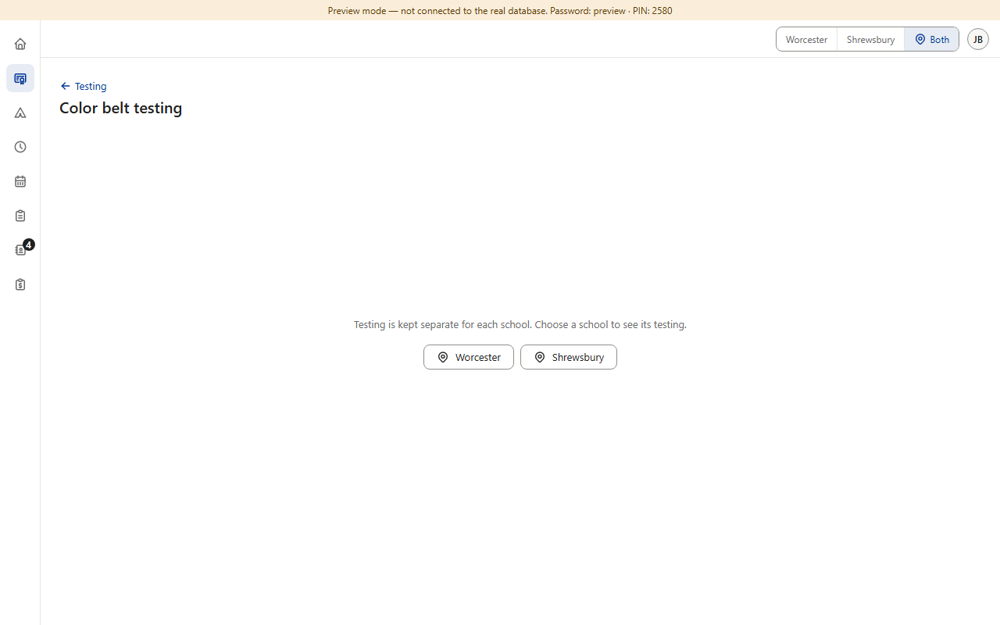
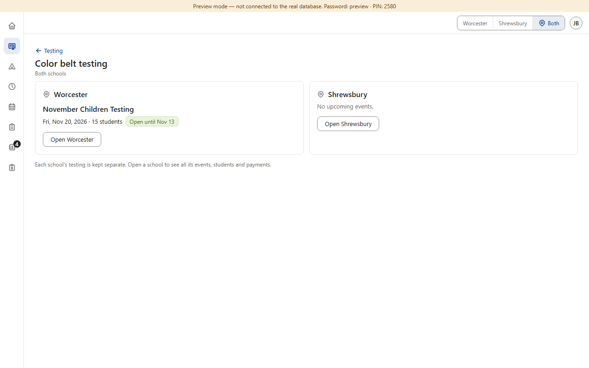
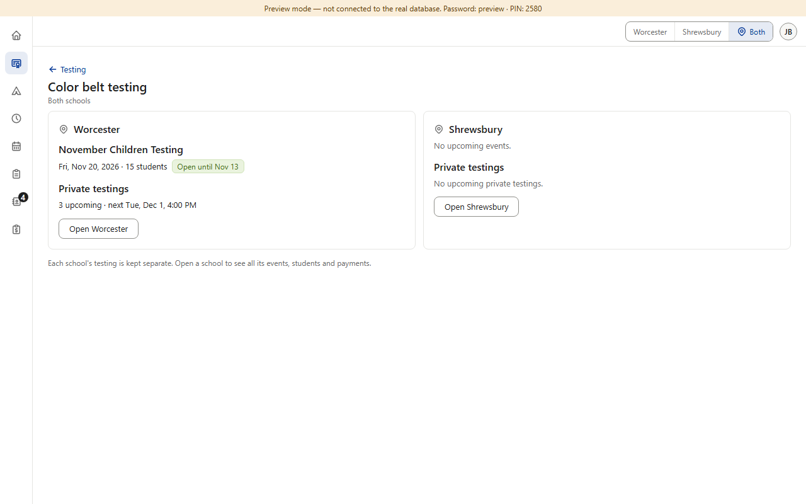
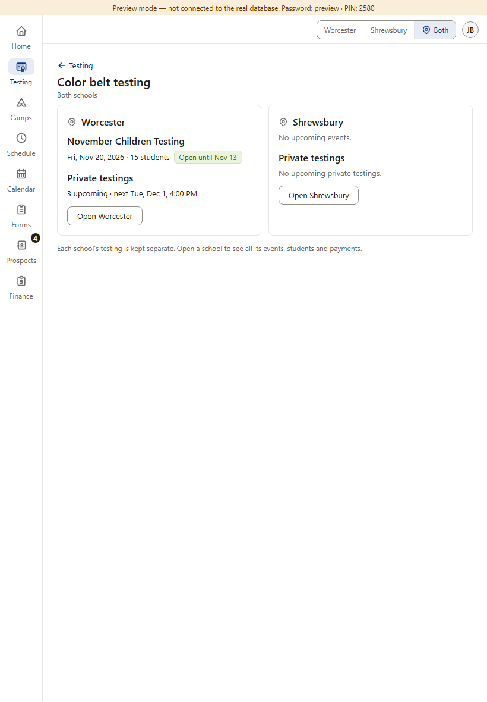
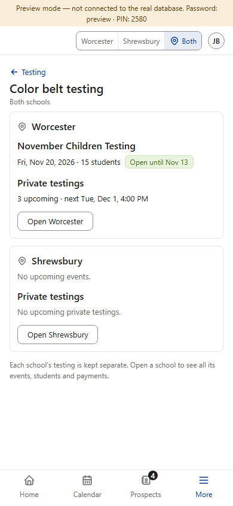
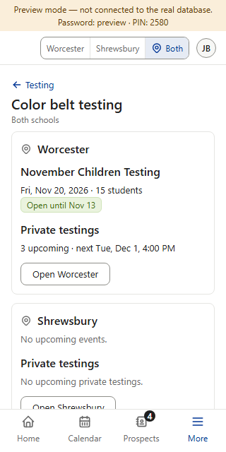

Already decided (v1.022): on Both, Color Belt shows one box per school, the way Finance does (v0.198): “Both schools” under the title, each school's upcoming testing, and Open Worcester / Open Shrewsbury (they switch the whole dashboard, as today's buttons do). Nothing can be changed on Both (v0.34 / v0.35 stay). Settled by copying Finance: phones stack the boxes; a school with nothing says “No upcoming events.” One question at the bottom. (Preview screenshots, fake data; the “after” is drawn on the real page.)





